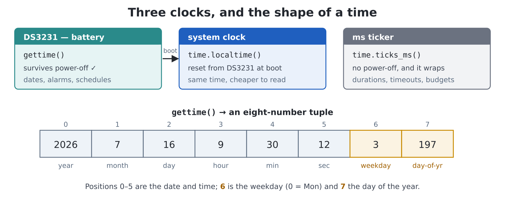

A machine that knows the time stops being a computer and starts being an appliance — a bedside clock, a kitchen timer, a scheduler, a lab notebook that dates its own entries. Yours has been quietly ready since chapter 1: the DS3231 chip keeps the date and time on its CR2032 coin cell whether the machine is powered or not, accurate to a couple of seconds a month, and the system reads it automatically at every boot. This chapter puts it to work — and finishes the bedside gadget that chapters 15 and 20 have been building toward.
You have met all three; here they are side by side, because choosing the right one is most of time programming:
| Clock | Read with | Survives power-off? | For |
|---|---|---|---|
| DS3231 (battery) | gettime() |
yes | wall-clock time: dates, alarms, schedules |
| System clock | time.localtime() |
no (reset from DS3231 at boot) | same, cheaper to read |
| Millisecond ticker | time.ticks_ms() |
no, and wraps | stopwatch work: durations, timeouts, frame budgets |
The rules of thumb: “what time is it?” →
gettime(); “how long did that take?” →
ticks_ms() + ticks_diff() (chapter 21 — never
subtract wall-clock times for durations; a minute rollover mid-measure
makes nonsense). Setting the clock is one call, which also programs the
DS3231 so the setting keeps:
# year, month, day, hour, minute, second
settime(2026, 7, 16, 9, 30, 0)(synctime() re-reads the DS3231 into the system clock —
rarely needed by hand; and chapter 30 sets the whole thing from the
internet in one line.)
Pico Computer 3 specific.
gettime(),settime()andsynctime()are this machine’s helpers for its battery-backed DS3231 clock — a chip plain MicroPython knows nothing about. The system clock underneath them is standard:time.localtime()reads it andtime.time()gives the epoch seconds, on any MicroPython board.gettime()just returns the first six numbers of that tuple (year to second), sourced from the DS3231 so they survive power-off. On a Colour Maximite 2 the same helpers work on its own battery-backed clock (Appendix K).
gettime() hands back a time tuple — the
standard eight-number shape that time.localtime() produces
across MicroPython (here it is read from the DS3231), and chapter 10
taught you everything needed to take it apart:
>>> t = gettime()
>>> t
(2026, 7, 16, 9, 30, 12, 3, 197)
>>> year, month, day, hh, mm, ss = t[:6]
>>> f"{hh:02}:{mm:02}:{ss:02}"
'09:30:12'Positions 0–5 are what you’d guess; position 6 is the weekday (0 = Monday) and 7 the day-of-year.

Two idioms cover nearly all display work: the :02 pad
(chapter 6’s format specs — clocks are why they exist) and a name table
for weekdays:
>>> DAYS = ("Mon", "Tue", "Wed", "Thu", "Fri", "Sat", "Sun")
>>> DAYS[gettime()[6]]
'Thu'mktimeQuestions like “what date is 90 days from now?” or “how long until the party?” defeat tuple fiddling instantly (month lengths, leap years…). The professional route converts to seconds, does plain arithmetic, and converts back:
import time
# tuple -> one big seconds count (mktime wants 8 values: the
# 6 from gettime, then weekday and day of year, which it ignores)
t = time.mktime(gettime() + (0, 0))
t += 90 * 24 * 60 * 60 # add 90 days of seconds
future = time.localtime(t) # seconds -> tuple again
print(f"{future[2]:02}/{future[1]:02}/{future[0]}")mktime and localtime are inverses, and
between them every calendar question becomes subtraction. One footnote
for the curious: the “seconds” are counted from the year 2000 on this
machine (PCs count from 1970) — invisible while arithmetic stays
on-board, worth knowing the day you exchange timestamps with the outside
world.
Coming from MMBasic:
TIME$andDATE$are the tuple plus an f-string — build exactly the format you want rather than parsing a fixed one.SETTIMEmaps tosettime(), battery behaviour and all.
An appliance in sixty lines: chapter 27’s GUI for the controls,
chapter 21’s ticks for the countdown, chapter 20 for the ding. The
design point to study is the poll-loop clock: nothing
sleeps for a minute — the loop keeps spinning at 20 Hz, the GUI stays
alive, and the countdown is recomputed from ticks_diff
each pass rather than counted down (so it cannot drift, chapter
22’s lesson in kitchen form). edit("timer.py"):
import time
import pcgui
screen(hdmi.RGB320)
time.sleep(3)
console("serial")
hdmi.fb().fill(0)
g = pcgui.GUI()
g.start()
done = [False]
# None, or (start_ms, total_ms)
running = [None]
g.caption(96, 8, "KITCHEN TIMER", fg=GOLD, font=2)
g.caption(24, 58, "minutes")
mins = g.spinner(24, 72, 90, 28, value=5, lo=1, hi=120, step=1)
disp = g.displaybox(150, 56, 146, 44, "05:00", font=3)
bar = g.bargauge(20, 116, 280, 16, value=0, lo=0, hi=100,
fg=GREEN)
def fmt_ms(ms):
s = max(0, ms) // 1000
return f"{s // 60:02}:{s % 60:02}"
def start(b):
total = int(mins.number) * 60000
running[0] = (time.ticks_ms(), total)
disp.value = fmt_ms(total)
def cancel(b):
running[0] = None
bar.value = 0
disp.value = fmt_ms(int(mins.number) * 60000)
def quit_app(b):
done[0] = True
g.button(30, 150, 120, 34, "START", fg=WHITE, bg=COBALT,
callback=start)
g.button(170, 150, 120, 34, "CANCEL", callback=cancel)
g.button(12, 202, 70, 26, "EXIT", callback=quit_app)
try:
while not done[0]:
g.poll()
if running[0]:
t0, total = running[0]
left = total - time.ticks_diff(time.ticks_ms(), t0)
disp.value = fmt_ms(left)
bar.value = min(100, 100 * (total - max(0,
left)) // total)
if left <= 0:
running[0] = None
disp.value = "DING!"
for _ in range(3):
tone(880, 880, 160, wait=True)
tone(1318, 1318, 240, wait=True)
time.sleep_ms(50)
finally:
g.stop()
console()Boil an egg with it. Then notice the small honesty in
start: the spinner’s .number is read when
START is pressed — adjust the spinner mid-countdown and nothing
lurches, because the running timer owns its own copy of
total. Controls are a view, not the home of the data —
chapter 27’s principle, ticking.
Chapter 15’s living clock, grown up: the big dial and seconds ring
return, joined by an alarm you set with the arrow keys, arm with
A, and silence with any key — and the setting
survives power-off (chapter 12, four lines).
Full-screen and key-driven — a bedside gadget wants no pop-up keyboards.
edit("alarm.py"):
import time
import keyboard
def held(code):
for i in range(1, keydown(0) + 1):
if keydown(i) == code:
return True
return False
screen(hdmi.RGB640)
time.sleep(3)
W = hdmi.width()
H = hdmi.height()
d = hdmi.fb()
BG = d.colour(0x101828)
RING = d.colour(GOLD)
DIGITS = d.colour(WHITE)
DIM = d.colour(GRAY)
ALERT = d.colour(RED)
ALARM_FILE = "/alarm.txt"
def load_alarm():
try:
with open(ALARM_FILE) as f:
hh, mm, armed = f.read().strip().split(",")
return int(hh), int(mm), int(armed)
except (OSError, ValueError):
return 7, 0, 0
def save_alarm():
with open(ALARM_FILE, "w") as f:
f.write(f"{ahh},{amm},{armed}\n")
ahh, amm, armed = load_alarm()
ringing = False
# (hh, mm) already rung this minute
fired_at = None
up_was = dn_was = a_was = True
d.fill(BG)
cx, cy = W // 2, H // 2
tw = 8 * 32 # font 6: "HH:MM:SS"
x0, y0 = cx - tw // 2, cy - 25
console("none")
try:
while not held(keyboard.ESC):
up_now, dn_now = held(keyboard.UP), held(keyboard.DOWN)
a_now = held(ord("a"))
if up_now and not up_was:
amm += 5
ahh, amm = (ahh + amm // 60) % 24, amm % 60
fired_at = None
save_alarm()
if dn_now and not dn_was:
amm -= 5
if amm < 0:
amm += 60
ahh = (ahh - 1) % 24
fired_at = None
save_alarm()
if a_now and not a_was:
armed = 0 if armed else 1
fired_at = None
save_alarm()
up_was, dn_was, a_was = up_now, dn_now, a_now
h, m, s = gettime()[3:6]
if armed and (h, m) == (ahh, amm) and fired_at != (h, m):
ringing = True
fired_at = (h, m)
if ringing:
if keydown(0): # any key silences
ringing = False
d.fill(BG)
else:
d.fill(ALERT if s % 2 else BG)
tone(880, 880, 120, wait=True)
tone(1318, 1318, 120, wait=True)
d.fill_rect(x0, y0, tw, 50, BG)
hdmi.text(f"{h:02}:{m:02}:{s:02}", x0, y0, DIGITS, -1, 1,
6)
d.arc(cx, cy, 150, 158, 0, 0, BG)
if s:
d.arc(cx, cy, 150, 158, 0, s * 6, RING)
status = (f"alarm {ahh:02}:{amm:02} "
+ ("ARMED" if armed else "off"))
hdmi.text(status, cx - len(status) * 8, H - 60,
RING if armed else DIM, BG, 2)
hdmi.text("UP/DOWN set A arm ESC quit", cx - 116,
H - 24, DIM, BG)
time.sleep_ms(50)
finally:
console()Set it five minutes ahead, arm it, and go make tea. The engineering worth reading twice:
fired_at is the re-trigger guard. The
alarm condition — (h, m) == (ahh, amm) — stays true for a
whole minute; silencing the bell mustn’t invite it back thirty
seconds later. Remembering which minute already fired (and clearing that
memory whenever the alarm is changed or re-armed) is the same
edge-versus-level distinction as chapter 25’s keys, at a minute’s
timescale.s % 2 (state → appearance, the clock’s own data animating
the alert), the tones are short so the any-key check runs between them,
and silencing repaints calm.bg text — deliberately: this program is that
chapter’s clock completed, and /main.py-worthy at
last (chapter 5: cp("alarm.py", "/main.py") and the machine
is an alarm clock).DAYS
table plus f-string, font 3. Bedside clocks say “Thu 16 Jul”; yours
should.mktime,
subtracted from now, divided down. Chapter 3’s challenge answered with
four digits of precision — and it updates live on the alarm
clock’s screen if you let it.mktime arithmetic or minute maths — your call) and
re-arms, instead of silencing. One if; entire mornings
ruined differently.gettime() clock in a corner caption, updated once per
second (ticks_diff gate). Two time systems, one poll loop —
the shape of every instrument panel.Cron, junior. A schedule.txt of
HH,MM,program.py lines and a runner that
run()s each at its appointed minute (the
fired_at guard, per line — a dict keyed by line number,
chapter 10). The machine now does things while you’re
out.
The sunrise clock. From thirty minutes before the alarm, fade the screen background from black through dawn colours to full warmth (a list of RGB stops, interpolated with minute arithmetic). Gentler than the bell — which still fires, for realists.
World clock. A dict of
city: offset_hours, rendered as a panel of times via
mktime arithmetic — plus the honest wrinkle: whose offsets
are wrong half the year, and why is daylight-saving not
something this chapter can compute? (A genuine limit — worth knowing
where the machine’s knowledge ends.)
The hardware alarm. Your software alarm dies with its program; the DS3231 carries a daily alarm of its own, in the battery-backed chip, wired to this board’s GP32:
import ds3231
# 07:00, every day, survives resets
ds3231.set_alarm(7, 0)
if ds3231.alarm_fired(): # poll this...
ds3231.clear_alarm() # ...and acknowledgeRework the bedside clock to arm the chip instead of comparing times:
the fired_at guard disappears (the chip latches the flag
until you clear it — the hardware does your edge detection), and the
alarm now fires even if the clock program crashed and was restarted
overnight. The deeper prize — ds3231.alarm_pin().irq()
waking code with no polling loop at all — is chapter 34’s technique, and
this challenge is its perfect rehearsal.